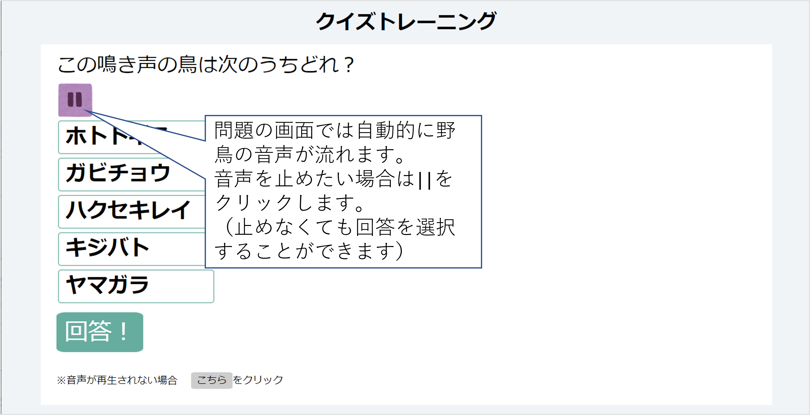
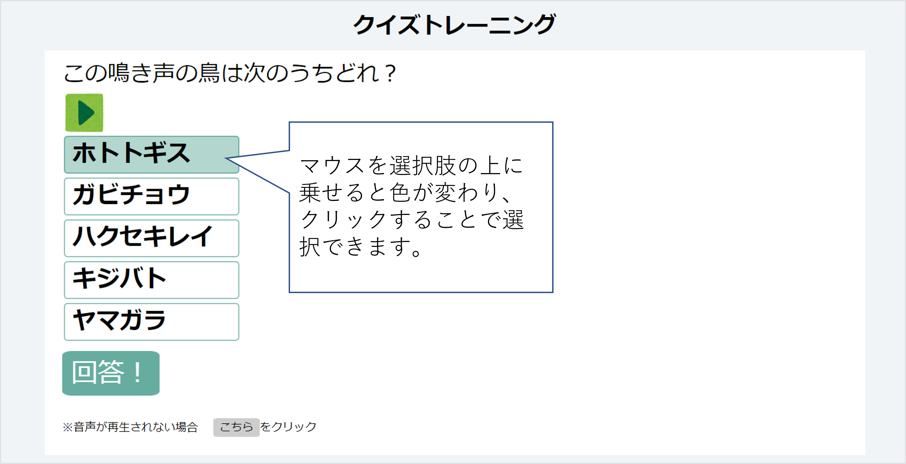
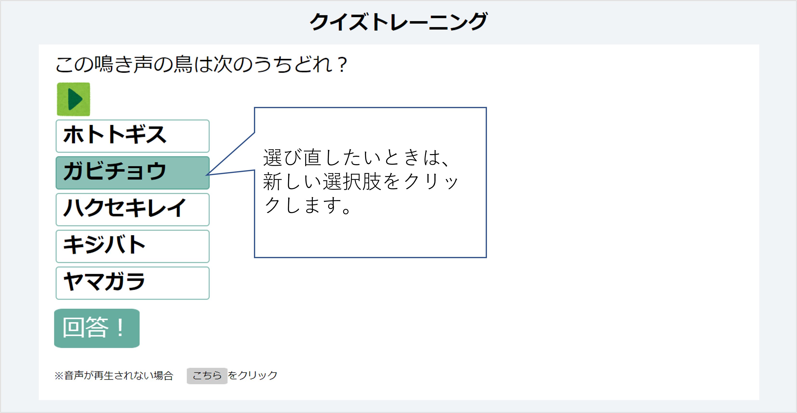
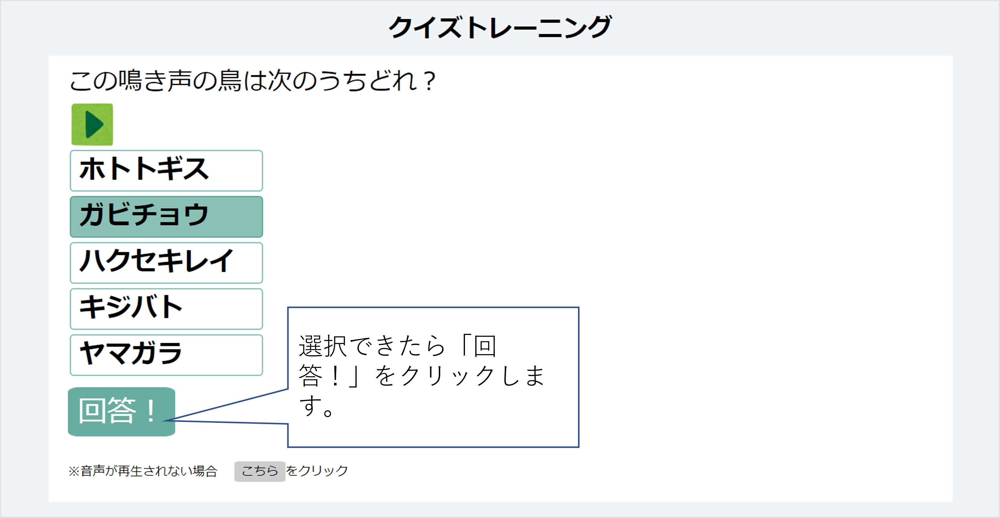
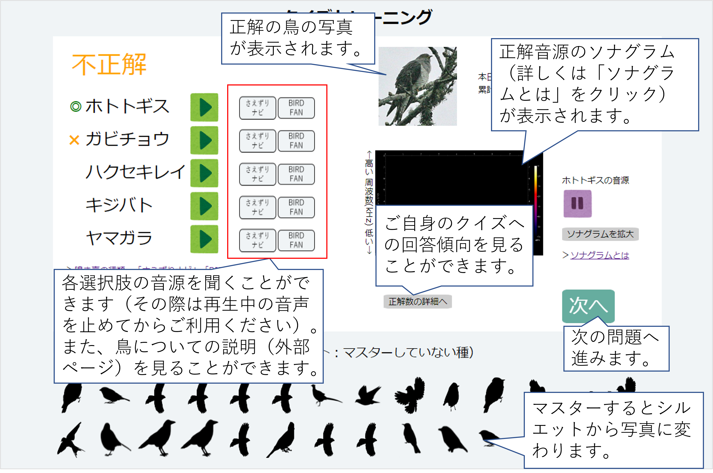
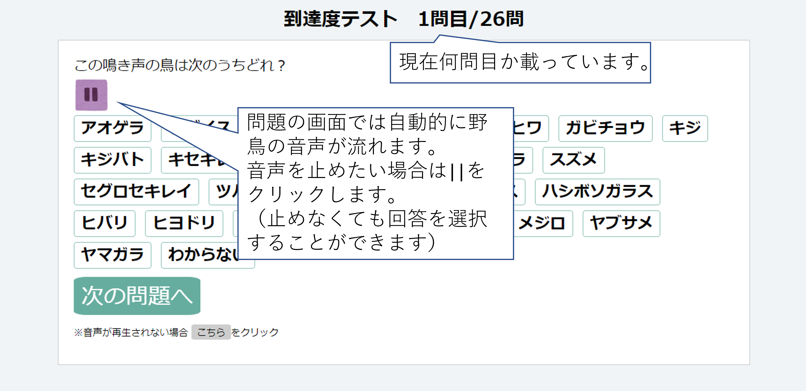
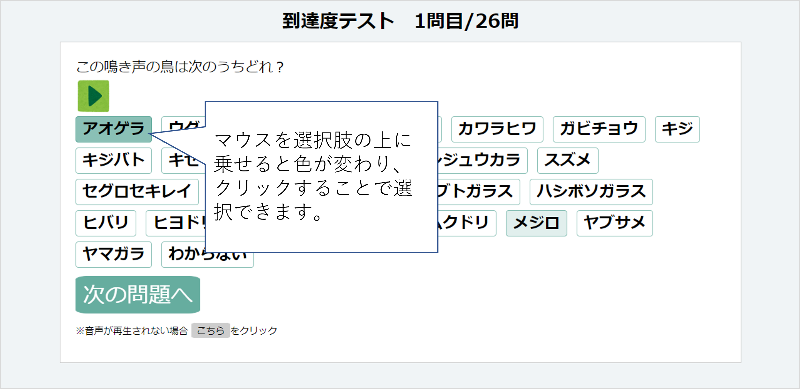
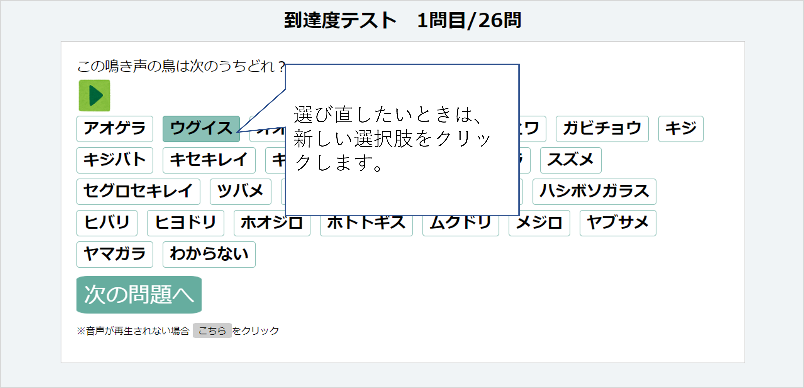
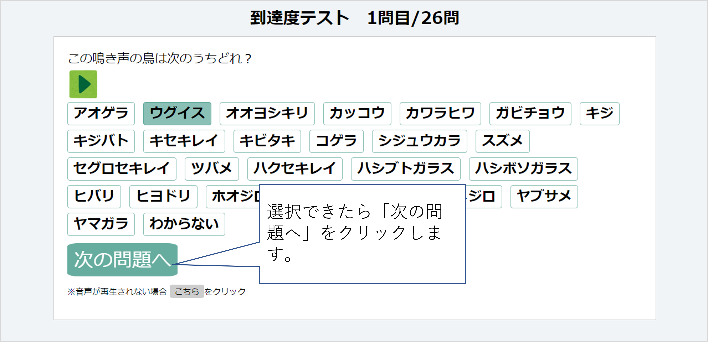

© 2024 National Institute for Environmental Studies
とりトレは「クイズトレーニング」と 「到達度テスト」が利用できます。
クイズトレーニングでは、野鳥の鳴き声を聞き、
5択からどの野鳥が鳴いたのか選びます。
問題数に上限はなく、好きなだけトレーニングできます。いつでもやめられますので、1問からでも気軽に挑戦してみてください。
到達度テストでは、クイズトレーニングの前後など、 ご自身の実力を試したいときにご利用ください。26問あります。 何回でもテストいただけます。
クイズトレーニングと到達度テストでは、26種類、 26音源楽しむことができます。
本サイトを一旦離れても継続的にトレーニングが実施できるよう、 cookieを用いてユーザーを識別しています (動作が不安定になることがあるため、 履歴が必ず保存されることを保証するものではありません)。





出題された種を4回連続で正解し、出題頻度を下げると「マスター」したとみなされます。マスターしたあと、2回不正解するとマスターは取り消しとなります。




© 2024 National Institute for Environmental Studies